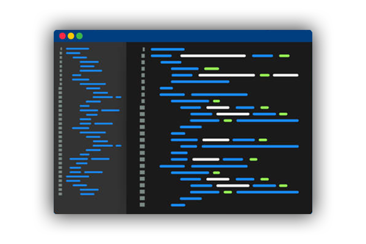

<!DOCTYPE hmtl>
<hmtl>
    <head>
        <title>Kevin Yang's portafolio</title>
        <meta charset="UTF-8">
        <meta name="description" content="Website portafolio">
        <meta name="keywords" content="Kevin Yang-Li">
        <meta name="author" content="Kevin Yang-Li">
        <meta name="viewport" content="width=device-width, initial-scale=1.0">

        <!--FONTS-->
        <link rel="preconnect" href="https://fonts.googleapis.com">
        <link rel="preconnect" href="https://fonts.gstatic.com" crossorigin>
        <link href="https://fonts.googleapis.com/css2?family=Atkinson+Hyperlegible&display=swap" rel="stylesheet">
        <script src="https://platform.linkedin.com/badges/js/profile.js" async defer type="text/javascript"></script>        
        <link rel="preconnect" href="https://fonts.googleapis.com">
        <link rel="preconnect" href="https://fonts.gstatic.com" crossorigin>
        <link href="https://fonts.googleapis.com/css2?family=Roboto:wght@900&display=swap" rel="stylesheet">
        <link rel="stylesheet" href="style.css">
        <link rel="preconnect" href="https://fonts.googleapis.com">
        <link rel="preconnect" href="https://fonts.gstatic.com" crossorigin>
        <link href="https://fonts.googleapis.com/css2?family=Indie+Flower&display=swap" rel="stylesheet">
        <link rel="preconnect" href="https://fonts.googleapis.com">
        <link rel="preconnect" href="https://fonts.gstatic.com" crossorigin>
        <link href="https://fonts.googleapis.com/css2?family=Montserrat:wght@500&display=swap" rel="stylesheet">
        <link rel="preconnect" href="https://fonts.googleapis.com">
        <link rel="preconnect" href="https://fonts.gstatic.com" crossorigin>
        <link href="https://fonts.googleapis.com/css2?family=Mulish:wght@500&display=swap" rel="stylesheet">
        <link rel="stylesheet" type="text/css" href = "https://cdnjs.cloudflare.com/ajax/libs/font-awesome/6.0.0-beta3/css/all.min.css">


    </head>


    <body>
        <!--MENU SECTION-->
        <header>
           
           <nav>
               <ul class = "nav_links">
                   <li><a href = "Kevin Yang Resume.pdf" target = "_blank" rel = "noopener noreferrer">Resume</a></li>
                   <li><a href = "https://www.notion.so/2b5725c2ed4b4a1c81449d3a96e38783?v=b8b6b5fca91c462097b35c2d67525a7e" target = "_blank" rel="noopener noreferrer">Books</a></li>
               </ul>
           </nav>
           <a class = "cta" href = "https://www.linkedin.com/in/kevin-yang-li/" target = "_blank" rel="noopener noreferrer"><button class = "headbtn">Contact</button></a>
        </header>
        <!--INTRO SECTION -->      
        <section class = "section1">
            <div class = "intro">
                
                <h2>I'm Kevin - Social Media BRACE Cadet, Content ditor, and aspiring Photographer.
                    ______________________________________________
                </h2>
            <p style = "font-size: 1.2em"> On this site, you will get to know a little more about me. My interests lies in programming, photographing, and editing.
                Below, you can see many of my projects. I welcome you to contact me if you have any idea in mind
                we can collaborate. </strong></p>            

            </div>
            
        <!--PROJECTS -->
         </section>

         <!--PROJECT SECTION --> 
         <section2 class = "section2">
             <h1 class = "check">Check out my projects!</h1>
             <!--PROJECT 1 -->
            <div class="projects2">
                <div class="preview">
                    <h6>
                        Java
                    </h6>
                    <h2>Project 1</h2>
                    <a>Completed</a>
                </div>
                <div class="inf">
                    <h2>AP Computer Science A</h2>
                    <p class = "p-trunc">Check out the different projects I have made while learning Java! I explored from all sorts of different topics within Computer Science through these projects, some of these are: Cypher decryption, Object-Oriented Programming, Sorting Algorithms, etc.   <br><br></p>
                    <br>
                    <button class = "cardbtn">
                        <a class = "headbtn" href = "https://github.com/Kevin-Yang130/AP-Computer-Science-Projects" target = "_blank" rel="noopener noreferrer">View</a>
                    </button>
                </div>    
            </div>
            <br>
            <br>
            <!--PROJECT 2 -->
            <div class="projects2">
                <div class="preview">
                    <h6>
                        Photoshop
                    </h6>
                    <h2>Project 2</h2>
                    <a>In-progress</a>
                </div>
                <div class="inf">
                    <h2>Photoshop Editing</h2>
                    <p class = "p-trunc"> Capturing every moment through the lens of my camera! I'm a self-taught content editor and aspiring photographer. I welcome you to view the different images and pictures I have edited through my 4 years of experience using Adobe Photoshop! <br><br></p>
                    <br>
                    <button class = "cardbtn">
                        <a class = "headbtn" href = "https://www.pinterest.com/yanglikevin/kevins-edited-pictures-gallery/" target = "_blank" rel="noopener noreferrer">View</a>
                    </button>
                </div>    
            </div>
            <br>
            <br>       
            <!--PROJECT 3 -->
            <div class="projects2">
                <div class="preview">
                    <h6>
                    </h6>
                    <h2>Project 3</h2>
                    <a>In-progress</a>
                </div>
                <div class="inf">
                    <h2>BRACE C5 Social Media Cadet </h2>
                    <p class = "p-trunc">I'm the first C5 Social Media BRACE Cadet at Marjory Stoneman Douglas! Through social media, I help other students learn about ways to afford to attend college by making posts about scholarships, financial aid, and the college application process. <br><br></p>
                    <br>
                    <button class = "cardbtn"><a class = "headbtn" href = "https://www.instagram.com/bracecadets/" target = "_blank" rel="noopener noreferrer">View</a>
                    </button>
                </div>    
            </div>
         </section2>

        <!--FOOTER -->

         <section3 class = "section3">
            <footer>
                <div class = "footer-bottom">
                    <h3>Contact Information</h3>
                  <ul class = "socials">
                      <li><a href = "https://www.instagram.com/kevin_yang__/" target = "_blank" rel="noopener noreferrer"><i class = "fab fa-instagram"></i></a></li> 
                      <li><a href = "https://www.linkedin.com/in/kevin-yang-li/" target = "_blank" rel="noopener noreferrer"><i class = "fab fa-linkedin-in" ></i></a></li> 
                      <li><a href = "https://discord.gg/PffA3EJ9zt" target = "_blank" rel="noopener noreferrer"><i class = "fab fa-discord"></i></a></li> 
                  </ul> 
                    <p>copyright &copy; 2022 Kevin Yang-Li</p>
                </div>
              </footer>

         </section3>
         
        

        

    </body>
</hmtl>